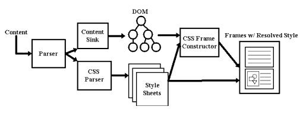

You are currently viewing a snapshot of www.mozilla.org taken on April 21, 2008. Most of this content is highly out of date (some pages haven't been updated since the project began in 1998) and exists for historical purposes only. If there are any pages on this archive site that you think should be added back to www.mozilla.org, please file a bug.

Appendix: Data Flow Inside Gecko
While it isn't strictly necessary for embedders to understand how Gecko does what it does, a brief overview of the main structures involved as Gecko puts bits on a display may be helpful.
HTML data comes into Gecko either from the network or a local source. The first thing that happens is that it is parsed, using Gecko's own HTML parser. Then the Content Model arranges this parsed data into a large tree. The tree is also known as the "Document" and its structure is based on the W3C Document Object Model. Any use of DOM APIs manipulates the data in the Content Model.
Next the data is put into frames using CSS and the Frame Constructor. A frame in this sense (which is not the same thing as an HTML frame) is basically an abstract box within which a DOM element will be displayed. This process produces a Frame Tree, which, like the Content Model, is a tree of data, but this time focussed not on the logical relationship among the elements but on the underlying calculations needed to display the data. In the beginning a frame has no size. Using CSS rules specifying how the elements of the DOM should look when they are displayed, including information like font type or image size, the eventual size of each frame is calculated. Because the same data may need to be displayed in different ways - e.g. to a monitor and to a printer, etc. - a particular Content Model may have more than one Frame Tree associated with it. In such a case, each individual Frame Tree would belong to a different "presentation" mode.
Calculations continue as new information flows into the system using a process called Reflow. As information in the Frame Tree changes, the section of the Frame Tree involved is marked "dirty" by the Frame Constructor. Reflow repeatedly steps through the tree, processing every "dirty" item it encounters until all the items it encounters are "clean". Every item in the Frame Tree has a pointer back to its corresponding item in the Content Model. A change in the Content Model, say through using the DOM APIs to change an element from hidden to visible, produces an equivalent change in the Frame Tree. It's important to note that all of these operations are purely data manipulations. Painting to the display itself is not yet involved to this point.
The next stage is the View Manager. With a few small exceptions that have to do with prompting the Frame Constructor to load graphics, the View Manager is the first place in the process that accesses the native OS. Delaying OS access until this point both helps Gecko to run more quickly and makes cross-platform issues easier to deal with. The View Manger is the place where Gecko figures out where on the display the data will need to be drawn. It then tells the system that that area is "invalid" and needs to be repainted. The actual painting is managed by the gfx submodule, while other low-level system operations are run through the widget submodule, which handles things like platform specific event (mouse clicks and so forth) processing loops and accessing system defaults (colors, fonts, etc.) Both gfx and widget are system specific.
If you want to take a look at the code underlying these structures, the code for the Content Model can be found in /mozilla/content, for the Frame Constructor, CSS, and Reflow in /mozilla/layout, for the View Manager in /mozilla/view, and for the DOM APIs in /mozilla/dom.
| Written by: Ellen Evans | Comments, questions, complaints?
Bug 141350 |